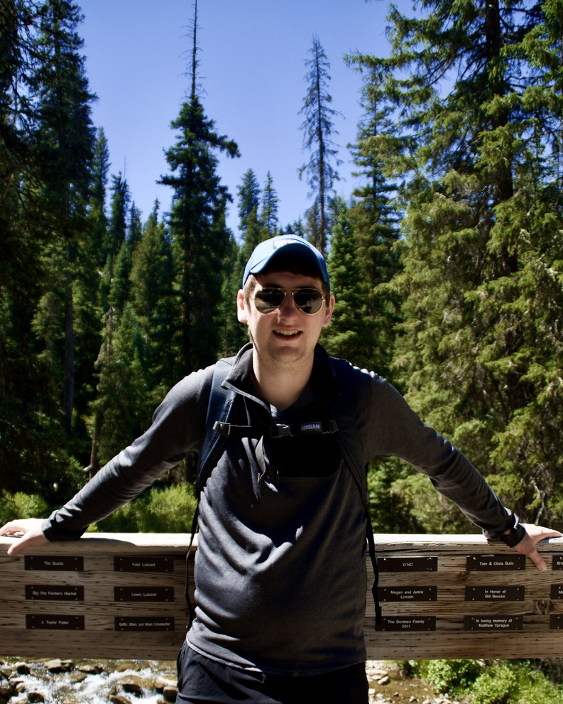
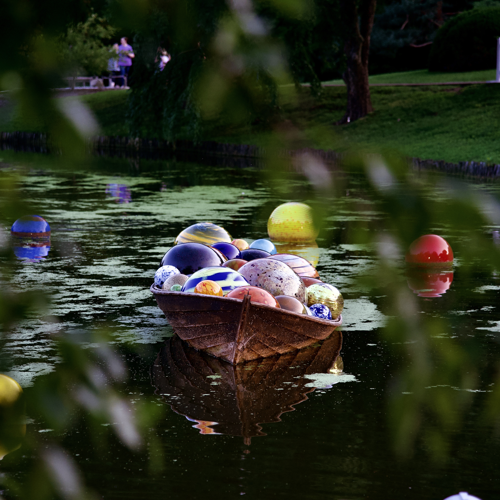
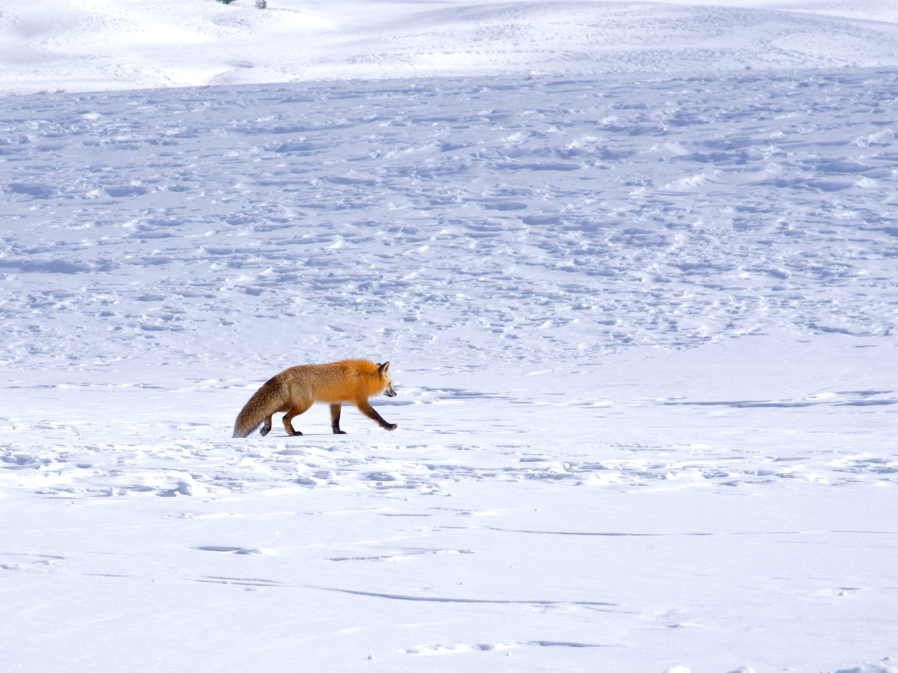
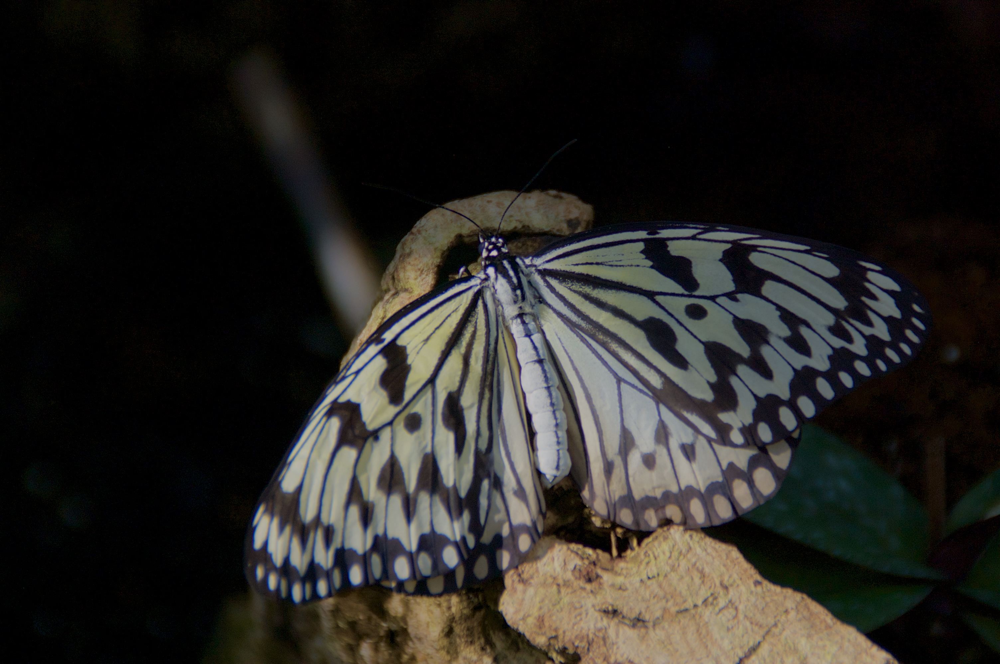
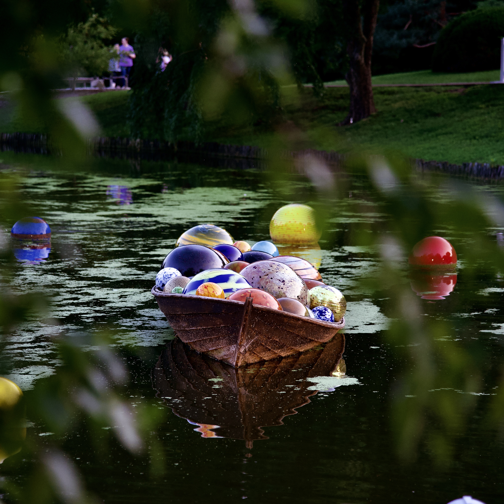
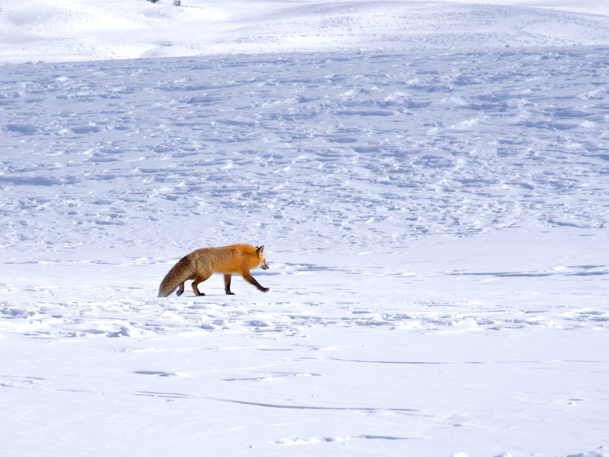
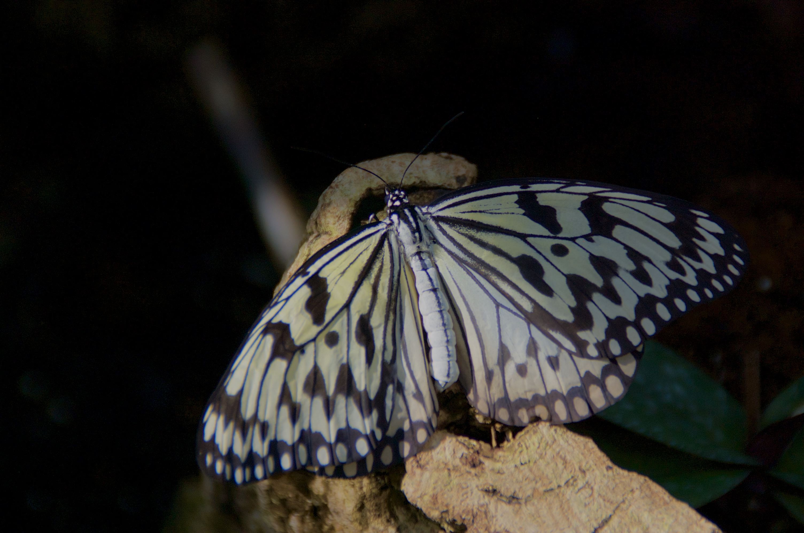

Matthew Heering
I'm a creative engineer who builds beautiful web layouts. With my background in education, I can advise on user experience to make your web apps more engaging.
Career Goals
My goal is to transition my career in public education to international education in the next year, and do freelance work in software engineering.
I've spent the last 7 years as a science teacher, however, in that time I've worked on side projects for other companies. You can check out my past work on my github.
I am available for freelance work. If you'd like to get in touch with me, contact me.
Education
- B.A. in Biology, Minor in French, Truman State University, 2015
- M.A. in Teaching, Lindenwood University, 2017
- Professional Full Stack Web Developer Certification, Washington University in St. Louis, 2021
- M.S. in Applied Computer Science, University of West Georgia, Expected 2025
Strengths
| Agile | Creative | Communication |
|---|---|---|
| I excel in a fast paced environment | I seek new solutions that are fun and engaging to users | I provide consistent communication on project progress |
Experience
- Science Teacher, Francis Howell High School, 2017-Current
- Accomplishments
- Developed the largest AP Biology program in the area
- Golden Sail Award for developing strong relaitonships with students
- Data Analyst, Monsanto, 2015-2017
- Accomplishments
- Developed spatial algorithm for calculating yield for a given area.
Projects
Check out my project pages to get an idea of my skills. I've showcased ones that show different skills, and design langauages.
Photography
In addition to web design, I enjoy photography, if you'd like for me to take photos for your project, this can be included. Below are some examples of photos I've taken
 




